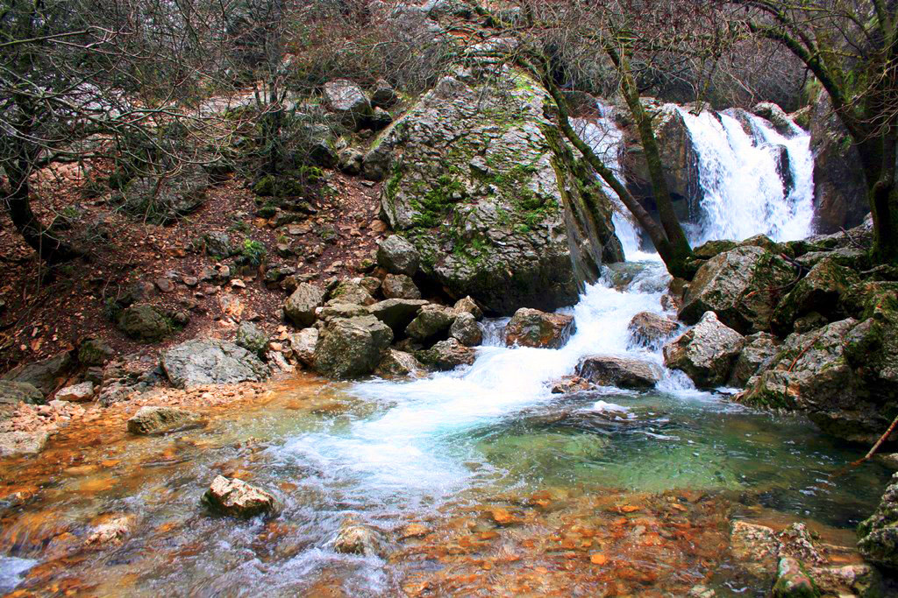

Sobre nosotros
Nuestro comienzo
Blue Loris nace de la pasión de dos programadores jóvenes y emprendedores con la visión de ayudar a otras empresas a destacar en el mundo digital. Fundada en la provincia de Córdoba, España, la andadura de nuestra empresa comenzó con la propuesta de ofrecer soluciones de consultoría web accesible y adaptada a las necesidades de nuestros clientes, enfocada en mejorar la experiencia de usuario y en reforzar la imagen en internet de las empresas que confian en nosotros.
Nuestro compromiso
Para nosotros, la primordial base de nuestra actividad es satisfacer las necesidades de nuestros clientes en cuanto a su imagen y posicionamiento en internet. Con esta idea en mente, creemos en la capacidad de mejorar el potencial de nuestros clientes y en el desarrollo local que ello conlleva. Muchas empresas no cuentan con una correcta imagen en internet o no ofrecen una experiencia de usuario que resulte atractiva a sus usuarios, por lo que mucho de su potencial se pierde. Nosotros creemos en un servicio digital que potencie el desarrollo sostenible mediante la mejora de los servicios web de las empresas.
Objetivos
El principal objetivo de nuestra actividad es convertir a Blue Loris en un referente de confianza y de calidad para los negocios y marcas que buscan desarrollar su potencial en el entorno digital. A través de nuestro trabajo, buscamos realizar una transformación en los servicios web de nuestros clientes que les permitan alcanzar sus objetivos en cuanto a su imagen y posición web. A corto plazo, buscamos establecer relaciones de confianza con las empresas locales y de nuestro entorno. En el medio plazo esperamos consolidarnos como aliados comerciales de estas empresas, alineando nuestros intereses con la satisfacción de nuestros clientes.